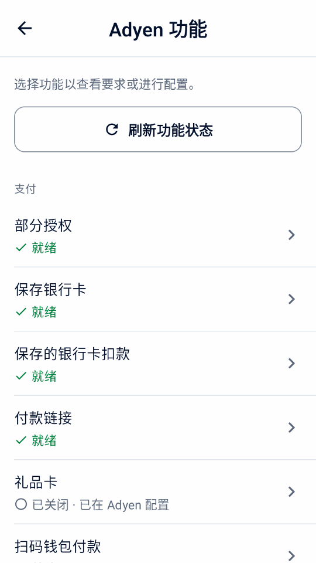
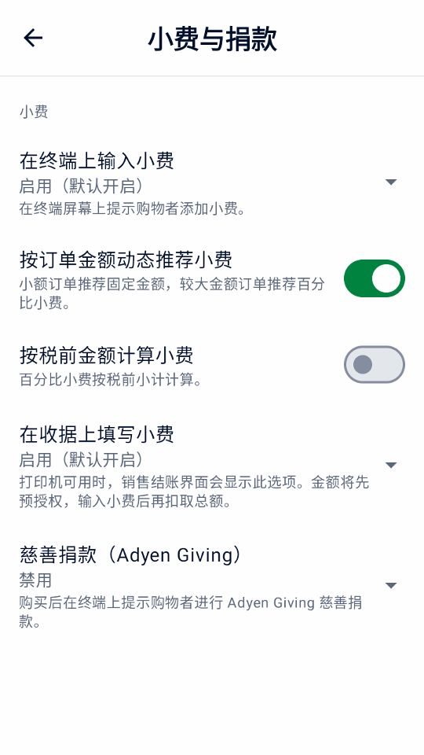
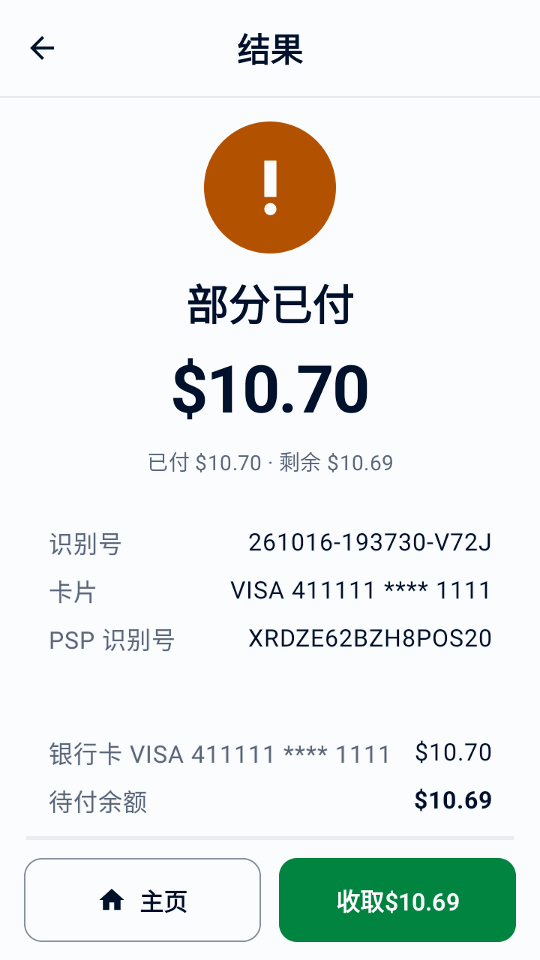
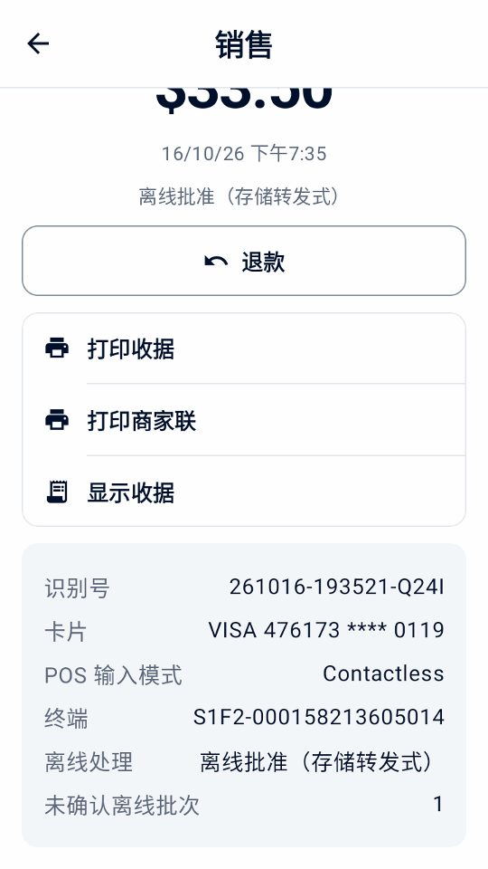
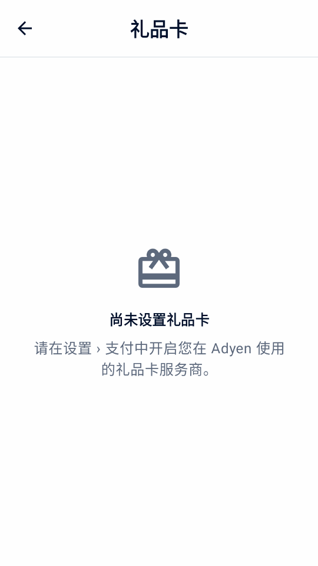

指南
可选支付功能
添加业务所需的支付功能。请确认可用性、完成 Adyen 设置，并在真实使用前测试每项功能。
检查并配置 Adyen 功能
连接收款目标后，打开设置 › Adyen 功能。 此页面只汇总 Adyen 支付和终端功能，不包括应用本身的工具或经理 PIN 设置。 四个分组为支付、小费与顾客互动、收据与扫描和终端与结果恢复。
每个功能名称下显示就绪、已在 Adyen 配置、 已关闭、需要设置或 未验证。不支持的功能位于底部折叠列表中。 这些只是设置状态，不保证商户账户、银行卡或支付方式一定能获批。若收款尚未设置完成，页面会先引导您完成设置。
已关闭 · 已在 Adyen 配置表示 Adyen 已为终端或门店配置该功能，例如小费选项、MOTO 或礼品卡类型； 在 Mini mPOS 中开启对应的本机设置即可使用。
- 点按刷新功能状态读取所选终端的设置。 查询真实终端需要快速入门中列出的 Management API 角色。
- 选择功能，查看其要求和设置。
- 对于支持的终端，在对应功能中编辑终端小费、DCC、MOTO 或离线限额。金额按正常货币单位输入； 若要移除自定义限额，请明确选择使用继承限额。每个小费建议都有单独验证的输入行。
- 点按 保存到 Adyen。
结果未知的保存不会自动重试。请成功刷新并检查 Adyen 的值后再决定下一步。 保存和回读只确认 Adyen 中的设置，不代表终端已应用。终端可能仍需下载配置并重启； 请参阅Adyen 终端配置更新。
Tap to Pay 不提供终端小费、购物者屏幕、MOTO/MKE、离线付款或终端对账等实体终端功能。账户启用和支付方式要求请参阅 Adyen 线下支付文档。


选择小费收取方式
终端小费在银行卡扣款前选择。收据小费先预留账单金额，待员工录入顾客填写的小费后再捕获付款。请查看下方各方式的要求。
在终端上收取小费
- 在 Adyen 功能中检查终端小费。必要时为付款币种设置预设和自定义小费选项。
- 在设置 › 小费与捐款中启用在终端上输入小费并选择结账默认状态。可选开启按订单金额动态推荐小费 ，对小额订单推荐固定金额、较大订单推荐百分比，或开启按税前金额计算小费。两项功能均需要终端软件 1.101 或更高版本，并通过连接检查验证。
- 销售结账时选择在终端上输入小费，点按支付。购物者在卡片扣款前选择小费。核对返回的总额和小费并提供收据。
此流程不需要打印机，也无需稍后录入小费。终端小费和收据小费不能同时选择。两者均不用于预授权、扫码钱包付款或付款链接；Tap to Pay 不提供终端小费。


收取购物者在收据上填写的小费
前提条件
- 配有打印机的终端
- Adyen 支持团队已开通预授权和超额扣款（overcapture）；参见 Adyen 收据小费指南
在设置 › 小费与捐款中选择启用（默认关闭）或启用（默认开启），决定结账开关的初始状态。默认的 禁用会隐藏该开关。部分借记卡和钱包不支持此流程。
- 在销售结账时开启在收据上填写小费，点按支付。账单金额只冻结，不扣款。
- 打印收据。收据有空白的小费和合计栏，商家联有签名栏。
- 购物者填写后，在结果界面或交易记录的待填写小费筛选中点按输入小费。
- 输入小费或合计，或点按无小费，然后确认。
应用会扣款账单加小费的总额。超过 20% 的小费需要发卡行先增加冻结金额；若被拒绝，请输入较少的小费或不加小费。小费保存后不能更改。录入小费前应取消付款而不是退款；录入后的退款包括小费。
警告
请及时录入每笔小费（包括零小费），以便在冻结到期前完成扣款。扣款失败或结果未知时，请参阅扣款问题。
冻结并收取订金
前提条件
- Adyen 支持团队已为您的付款方式开通预授权；参见 Adyen 预授权指南
预授权在卡上冻结金额，不立即扣款。无需将整个账户改为手动扣款：Mini mPOS 仅对此类付款请求手动扣款。
- 在首页点按新建预授权。选择预授权商品、扫描其条形码或输入金额。每笔预授权包含一个商品。
- 结账时点按预授权。收据会显示冻结金额。
- 准备好后，在交易记录中打开该记录并选择操作：
- 扣款
- 收取应付金额。较少金额会释放剩余部分；较多金额会先请求发卡行增加冻结金额。请求扣款后即可退款。
- 调整金额
- 更改冻结金额，不扣款。提交相同金额会续期授权。
- 取消预授权
- 释放冻结金额。如果已在商户后台扣款，Adyen 会改为全额退款。
已请求扣款不是最终确认，请检查商户后台。如需立即获得金额调整结果，请按 Adyen 授权调整指南启用 Return adjust authorisation data。
警告
冻结金额会到期。请每天检查预授权筛选，并及时扣款或取消。操作失败或结果未知时，请参阅扣款问题。
使用可选结账流程
只在设置中启用需要的结账选项。除部分授权、拆分和附加费外，这些流程都需要支持的实体终端，Tap to Pay 不可用。 请先查看Adyen 功能并用实际配置测试。大多数选项不能在同一笔付款中同时使用； 出现冲突时，结账页面会说明并要求您关闭其中一项。
使用语音引导付款
请先确认 Adyen 支持团队已为您的终端启用此功能、终端运行受支持的软件，且终端语言不是爱沙尼亚语、拉脱维亚语、 冰岛语或立陶宛语，然后在设置 › 支付 › 无障碍中开启启用语音引导。AMS1、S1F2、 S1F2L、S1E2L 和 S1U2 需要软件 1.117 或更高版本，M450、P630 和 SFO1 需要 1.124 或更高版本。请参阅 Adyen 无障碍付款要求。
结账时为需要的购物者开启语音引导，并关闭小费、Giving 和手动输入。请使用无需签名的卡。此次付款 将请求全额，并跳过购物者屏幕提示。
终端会朗读付款说明，请给购物者留足时间。Mini mPOS 最多等待十分钟获取结果。如果未收到响应，请在再次付款前 查询结果不明的交易。每次尝试后此选项都会重置。
附加费
附加费由 Adyen 按您在 Adyen 中的配置添加；Mini mPOS 不设置附加费。Adyen 报告附加费时，交易记录、收据和每日报告 会将其与购买金额和小费分开显示；扣款总额已包含附加费。未报告的附加费保留为未知。如果部分授权未报告附加费， 请先查看商户后台或退款到原卡，再重新开始。
请在付款前告知附加费，尤其是使用 Tap to Pay 时，因为它没有附加费确认页面。不要将附加费与 DCC 同时使用。已报告 附加费时，Mini mPOS 会阻止超出原预授权金额的调整和请款。请参阅 Adyen 附加费要求和 Adyen 附加费配置。
墨西哥信用卡分期付款
与 Adyen 确认发卡机构计划和费用后，在“设置”›“支付”中启用分期付款，并刷新 Adyen 功能以验证墨西哥门店。结账时 选择借记、一次性信用卡付款，或 3、6、9、12、18 期月付，并用一张符合条件的卡支付整笔销售。付款链接、令牌、 扫码钱包和礼品卡不会带上分期计划。
详情、交易记录和收据会显示请求的计划和返回的计划。不支持的发卡机构可能会拒绝。请按金额或全额退款原付款； 分期安排由发卡机构管理。
收取部分授权后的剩余金额
开启允许部分授权即可接受低于请求金额的刷卡批准。结果显示部分已付时，核对已付和剩余金额，然后点按“首页”旁的 收取，选择如何收取同一笔销售的余额。已批准部分已经付清，请勿重新按全额建立销售。
未收到响应不等于部分授权。请先处理结果不明的交易，再继续收款。


拆分销售或收取现金
在结账时点按其他付款选项。选择现金可收取全部余额；选择拆分付款可按金额、均分或商品指定本次金额，再选 银行卡或现金。价格和税额保持不变，多出的分币计入前几份。实收现金默认等于应付金额，输入数字会替换默认值。现金刚好可恢复该金额。核对实收现金与找零，交还找零后确认。现金仅记 录在此设备上。
销售在付清前保持部分已付。点按结果中的收取或交易记录中的收取余额即可继续，重启后也可操作。下一份均分 金额会自动选中。银行卡结果未知时，请先解决再收取更多款项。收据列出每笔付款，日报单独列出现金，终端总额不含现金。
设置礼品卡后，点按礼品卡即可用礼品卡支付所选金额；余额不足时会部分批准。礼品卡付款会退回到该卡， 本地礼品卡除外，需在 Mini mPOS 之外退款。


拆分销售的简体中文模拟器演示。
购物取现
Adyen 确认您的门店和卡计划后，在“设置”›“支付”中开启购物取现，设置现金限额和经理 PIN。结账时输入顾客 要求的额外现金，并用一张符合条件的卡支付整笔销售。购买可能获批而取现被拒；只交付已批准的现金。
取现
首页的取现可在不购买的情况下申请现金。Adyen 为门店确认澳大利亚 eftpos 取现后，单独启用此功能。
批准后，核对批准的现金和银行卡扣款。只交付已批准的现金，然后点按记录现金已交付并用经理 PIN 批准。金额未报告时切勿交付现金；结果不明时请先查询，不要再次申请现金。交易记录会保留未记录的交付；每日报告 将批准和已交付的现金与销售分开显示。退款从不退回已支出的现金。
接受餐券
请在签署发卡机构合同、登记门店并由 Adyen 启用餐券后，再在“设置”›“支付”中开启餐券。适用的餐券 由终端已验证的门店国家/地区决定：巴西 PAT 餐券；比利时、芬兰、德国、卢森堡和西班牙的 Mastercard 或 Visa 餐券；或法国的 Titres-restaurant。设置后请刷新 Adyen 功能。不提供 Monizze、比利时 Pluxee 和 Lunch Check。
如果餐券要求符合条件的商品，请在“设置”›“商品”中打开每个商品并开启可用餐券支付；自定义商品 始终不符合条件。结账时点按其他付款选项 › 拆分付款，再点按餐券。Mini mPOS 会给出餐券 最多可支付的金额；其余部分用银行卡或现金收取。Mastercard 或 Visa 餐券可能被部分批准。Titres-restaurant 每天最多 EUR 25，周日和公共假日不可用，且不能退款：请改为提供店内抵用金。余额不足的巴西餐券会被拒绝； 请输入较低的金额。
在巴西，开启在应用中选择巴西餐券即可从 Mini mPOS 发起餐券付款。应用内选择需要终端软件 1.129 或更高版本，并通过连接检查验证。如果 Adyen 支持团队已启用终端 自带的信用卡、借记卡或餐券选择界面，请保持关闭；此时按银行卡收款，由购物者在终端上选择。餐券退货只退回原 餐券，绝不以现金退还。
使用购物者端终端屏幕
使用独立的网络或云终端时，打开设置 › 购物者端终端屏幕。可选择在付款前显示商品明细、请购物者确认订单，或在结账未填写电子邮件时收集电子邮件。收集电子邮件需要先设置 电子收据；开启自动发送电子收据后，收据会自动发送。批准后可显示二维码并邀请购物者进行 0–10 评分；终端返回的评分显示在交易详情中。
这些提示使用应用语言。Mini mPOS 在支付终端本机运行时不提供这些提示。二维码包含商户参考号，而不是收据； 仍请交付收据。
邀请慈善捐款
与 Adyen 安排开通 Adyen Giving 后，在设置 › 小费与捐款中启用慈善捐款（Adyen Giving） 。销售结账时选择它，在付款后通过终端邀请捐款。预授权和收据小费冻结付款不提供此选项。
购买和捐款是两笔独立交易。终端报告的捐款金额显示在交易详情中；购买获批本身不代表捐款已确认。
接受 MOTO 或手动键入卡号付款
- 向 Adyen 确认终端和账户允许所需输入方式。必要时在 Adyen 功能中配置 MOTO，并按员工 PIN 说明设置权限。
- 在设置 › 支付中启用 MOTO 或手动键入卡号选项。结账时，远程订单选择邮购/电话订购（MOTO）；芯片或非接触读取失败时选择 手动键入卡号（MKE）。两者只能选一个。
- 点按支付，查看欺诈和拒付责任警告，并在提示时完成经理批准。
手动输入的交易会让商户承担更高的欺诈和拒付责任。
识别离线付款和待确认批次
离线 EMV 和存储转发式（Store-and-Forward）支付需要通过本地连接访问支持的终端：Mini mPOS 运行在该终端上，或连接同一网络中的终端。云路由和 Tap to Pay 不提供此功能。请先与 Adyen 安排离线处理并评估风险，再在 Adyen 功能中设置限额。Mini mPOS 本身不会排队保存付款，也不能在本地网络中断时恢复终端连接。
交易记录会标记终端报告的离线销售。打开销售可查看离线处理、使用的是离线 EMV 还是存储转发式，以及终端报告的未确认离线批次。离线批准可能暂时没有 PSP 识别号。它不是未知结果，但也不代表 Adyen 已收到或结算该付款。
恢复终端与 Adyen 的连接后，在商户后台核对上传的付款和最终结果。进行终端对账 时检查离线和未确认批次警告；总额一致不代表离线付款已结算。若未收到明确付款答复，请遵循未知结果恢复步骤，不要自行认定已离线批准或再次收款。


扫描购物者的钱包付款码
在销售结账时使用扫描钱包读取购物者钱包应用中的付款码。这与扫描商品条码或退款收据不同。此功能需要实体支付终端，不适用于 Tap to Pay； 钱包查询需要只读权限。
- 核对合计和结账字段后点按扫描钱包。若已选择收据小费，请确认不使用该选项：钱包会立即收取合计，而不是进行预授权。
- 选择购物者的钱包。只有一个可用钱包时会自动选择。仅显示单独配置的钱包；Alipay+ 不代表 GCash、DANA、Kakao Pay 或 TrueMoney 已分别启用。
- 终端确认配备内置扫描器时，按下该终端的扫描按钮。它可能是网络或云端终端，而非运行 Mini mPOS 的设备。要改用设备摄像头，请点按使用摄像头。
- 扫描购物者的付款二维码或付款条码。一个有效扫描会立即开始支付。等待普通支付结果并提供收据。
取消后购物车会保留。终端扫码 30 秒后结束；请使用重新扫描或摄像头。部分钱包可能不支持 保存卡片；即使未保存令牌，已批准的付款仍然有效。处理钱包 问题，切勿通过重新扫描来替代结果不明的付款。
请使用 Adyen 钱包指南 和 Adyen PayPal 和 Venmo 指南核对钱包开通情况和 TEST 行为。


钱包扫描的简体中文模拟器演示。
使用识别号并保存卡片
- 商家交易识别号
- 如需记录预订或订单号，请开启设置 › 支付 › 要求输入商家交易识别号。此号码用于在 Adyen 中识别付款。留空时会生成唯一识别号。
- 购物者识别号
- 在设置 › 支付中选择购物者识别号：结账时输入的购物者识别号（默认）、购物者电子邮件或无。它会随每笔付款发送给 Adyen。电子邮件识别号默认经过哈希处理；所有设备请使用相同的盐值。
- 保存卡片
- 设置购物者识别号后，开启提供保存卡片选项。勾选 保存卡片以供今后支付前须取得购物者同意。之后如需扣款，请参见管理令牌。
管理令牌
- 在主页点按令牌，如有要求请输入经理 PIN。
- 输入购物者识别号（或用作识别号的电子邮件地址），然后点按查找令牌。
- 点按令牌旁的扣款，然后添加商品或自定义商品。此购物车与新建销售的购物车相互独立。
- 核对扣款信息后点按扣款。
顾客不在场，请先征得其同意。以不同循环扣款模式保存的令牌无法在此扣款。请从 交易记录中退款这些付款。如果扣款结果不明，七天内可在交易记录中查询，之后请在商户后台查询。 在新建销售的结账页面，当购物者识别号有已保存的令牌时，会出现令牌扣款。
要删除令牌，请点按其删除操作，核对详情，然后确认并用经理 PIN 批准。删除会在 Adyen 中移除该令牌， Mini mPOS 和其他集成都将无法使用；此操作无法撤销。过往付款及其退款仍可使用。如果删除仍未确认，请在再次扣款或 删除前点按检查删除结果。
销售和管理礼品卡
礼品卡需配合 Adyen 终端使用；Tap to Pay 不支持礼品卡。在设置 › 支付 › 礼品卡中， 开启您已在 Adyen 完成接入的每个服务商；对于 Intersolve 或本地礼品卡，添加 Adyen 提供的卡类型； 并选择员工出示卡片的方式：用相机扫描并输入有效期，或在终端上刷卡或手动输入。只提供 Adyen 为该服务商说明的操作： 停用仅限 Givex，本地礼品卡仅支持付款。
- 在主页点击礼品卡，然后选择服务商和出示卡片的方式。
- 选择查询余额、激活、充值、 提取现金、退款到卡或停用。
- 充入金额时，选择刷卡付款，或选择在应用外收款并确认已收到款项。
- 确认后，使用经理PIN批准。


余额查询和金额更改的批准遵循员工权限。先完成刷卡付款，付款获批后才发送金额； 如果付款结果未知，请先查询。如果已收款但金额未充入，活动会显示金额未充入： 请重新发送金额、退还刷卡付款，或记录已退还的款项。不会自动重复任何操作。
撤销充值仅对该卡 24 小时内的最近一次充值显示。提现通常支付全部余额并停用此卡； 只有部分 Givex 卡允许部分提现。获批后交付现金，然后点击现金已交付； 未确认的交付即使重启后也会保留在需要处理中。礼品卡活动显示在交易记录中， 并在每日报告中单独列出；从不计入销售。
通过链接收款
前提条件
- LIVE 使用前，商家账户已满足 Adyen Pay by Link 要求 ，包括条款和条件
- 在销售结账时点按创建付款链接。
- 展示二维码，或点按通过邮件发送链接、打印链接，在平板或手机上还可点按分享链接。
- 保持链接界面打开以查看到账，或稍后在交易记录中点按查询支付状态。
- 不再需要链接时，点按取消链接。
链接被支付、过期或取消前，记录显示待支付。在设置 › 支付 › 付款链接中设置链接有效时长。链接仅用于销售，不用于订金或收据小费。
重要
有效期内任何持有真实链接的人均可付款。已支付的链接请在商户后台 › Payments › Payment list中退款，应用无法为其退款。
链接未显示或不更新时，请参阅付款链接问题。